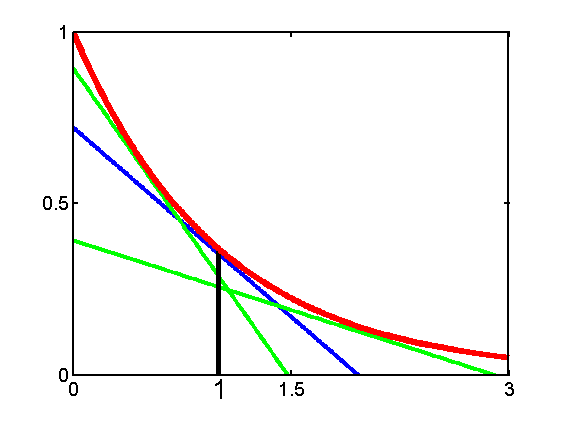

Conjugate Function Lower Bound
function conjugateFnExpLowerBound
f = @(x) exp(-x);
domain = 0:0.01:3;
xi = 1;
offset = 0.015;
t1 = @(x) -exp(-xi)*x + f(xi)+exp(-xi)*xi-offset;
t2 = @(x) -exp(-0.5)*x + f(0.5)+exp(-0.5)*0.5-offset;
t3 = @(x) -exp(-2)*x + f(2)+exp(-2)*2-offset;
figure; hold on;
plot(domain,t1(domain),'-b','LineWidth',3);
plot(domain,t2(domain),'-g','LineWidth',3);
plot(domain,t3(domain),'-g','LineWidth',3);
plot([1 1],[0 f(1)],'-k','LineWidth',4);
plot(domain,f(domain),'-r','LineWidth',5);
axis([0 3 0 1]);
set(gca,'XTick',[0 1.5 3],'YTick',[0 0.5 1],'box','on','LineWidth',2,'FontSize',14);
pdfcrop;
annotation(gcf,'textbox',[0.365 0.01208 0.05599 0.1111],...
'String',{'1'},...
'FontSize',20,...
'LineStyle','none');
printPmtkFigure('conjugateFnExpLowerBound');
end
